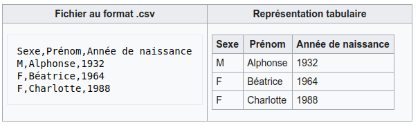

Présentation

Mission de développement d’une application métier (exploitation de documents CSV), de préférence sous la forme d’une application web à base de framework.
SPARK-LINE
Contexte
La société de service dans laquelle vous travaillez a comme client l’entreprise SPARK-LINE, createur de ligne
de vêtements. Cette société souhaite constituer un fichier client unique, au format CSV,
à partir de deux fichiers d’exportation transmis par ses filiales Française et Allemande. Ces fichiers sont : french-client.csv (~3000 clients) et german-client.csv
(~2000 clients).
Le fichier résultant sera composé d’un sous-ensemble des colonnes existantes (projection) et une sélection de lignes sera effectuée (sélection des personnes majeures uniquement).
Dans un second temps, le service R&D de la société SPARK-LINE souhaite obtenir ces données sous la forme d’une base de données relationnelle.
Première partie : Fusion
Les fichiers sources : french-client.csv (~3000 clients) et
german-client.csv (~2000 clients) ont même structure (même type de colonnes)
Le fichier CSV attendu, de nom french-german-client.csv, ne sera pas constitué de toutes ces colonnes (projection)
et de tous les enregistrements (sélection des personnes majeures uniquement).
-
Fusion : Obtenir un seul fichier à partir de 2 fichiers.
-
Projection : Toutes les colonnes ne sont pas concernées. Les colonnes souhaitées sont : genre, titre, nom, prénom, email, date de naissance, num tel, CCType, CCNumber, CVV2, CCExpires, adresse physique (plusieurs colonnes), taille, poids, véhicule, coordonnées GPS.
-
Sélection : seules les personnes majeures à la date de création du fichier devront être sélectionnées.
Informations transmises par SPARK-LINE
-
Certains clients ont des incohérences de valeurs entre la taille en inch et celle en cm. Il faudra donc extraire ces clients du fichier résultat.
-
À la fin de la fusion, nous souhaiterions connaitre la taille moyenne des personnes majeurs selon le genre, et globalement.
-
Des doublons sur le numéro de carte de crédit se sont glissés dans les données, ce qui remet en cause l’intégrité des données sur certains clients (dans le système en question, une carte de crédit ne peut être partagée). Nous vous demandons donc d’extraire les clients ne pouvant pas être identifiés par leur numéro de carte de crédit.
Informations techniques
Masse des données à traiter
La masse d’information à traiter (~5000 clients) n’aide pas à la mise au point au cours de la première phase de développement. Il est alors souhaitable de constituer des données de tests afin réduire, dans un premier temps, le volume des données à traiter.
Par exemple travailler avec un dizaine de clients suffit pour commencer. Par convention, vous nommerez ces fichiers
small-french-client.csv (6 clients) et small-german-client.csv
(4 clients) - ces fichiers sont à créer.
Fusion entrelacée ou séquentielle ?
Considérons les fichiers suivants, respectivement de 4 et 2 éléments :
Fic A : * * * * Fic B : ° °
La fusion de ces 2 fichiers peut être mené par un algorithme séquentiel ou entrelacé.

À ce stade, le client n’a pas manifesté de critère de tri. Vous proposerez donc à l’utilisateur la possibilité de choisir le type de fusion à appliquer.
Ce qui est attendu à l’issue de la première partie
Le README.adoc de votre projet hébergé sur GitLab.com fera office
de rapport de projet.
Branche de tests unitaire
Votre rapport (README.adoc de votre projet) devra présenter des exemples de tests unitaires de fusions
séquetielles et entrelacées, avec comme données d’entrée les fichiers small-french-client.csv et small-german-client.csv.
Opérations de fusion en tant que service injecté
Les opérations de fusions (function) seront placées dans une classe à part, en vue d’une utilisation par injection de service dans un contrôleur.
Votre rapport présentera vos travaux dans ce sens (algorithme, et méthode d’injection utilisée)
Gestion du upload
Les fichiers à fusionner sont transmis par l’utilisateur gestionnaire. Un gestionnaire est un utilisateur ayant des droits spécifiques - l’habilitation, bien que nécessaire, n’est pas requise dans cette mission, mais bien venue (selon la taille des équipes)
Votre rapport présentera vos travaux dans ce sens (compréhension de la gestion de l’upload dans le cadre d’une applications web multi-utilisateurs)
Deuxième partie : ETL
L’entreprise SPARK-LINE envisage de se lancer dans des produits en liens avec l’automobile. Le département R&D souhaite disposer d’un modèle de donnée suivant :

Votre mission consiste, à partir d’un fichier client CSV issu de la fusion (partie 1), et transmis par
l’utilisateur (upload), de peupler une base de données de tests correspondant
au modèle (3 tables : client, vehicule et marque).
Le champ vehicle sera donc de type entité Vehicule, idem pour Marque.
Vous aurez besoin de vous référerer à cette ressource qui explique comment
réaliser cela à travers un exemple (Product *-----> 1 Category) : https://symfony.com/doc/current/doctrine/associations.html
|
Le mapping Objet-Relationnel permettra de représenter les données métier liées, dans la base de données, par des clés étrangères.
Exemple :
"2000 Ford Galaxy" ⇒ Vehicule (id:123 idMarque:3 model:"galaxy" annee=2000)
et Marque (id=3 nom:"Ford")
Ce qui est attendu à l’issue de la seconde partie
-
Conception de la partie Model (ajout d’entités)
-
Lien avec un serveur de base de données (MySql)
-
Conception d’un contrôleur dédiè à la fonction ELT (Extract Transform Load). Mise au point d’un scénario utilisateur intégrant des règles de validation (robustesse de l’application)
| L’utilisateur pourra être en mesure de renouveller son action avec de nouvelles données ou des données mises à jours. Le chargement de nouvelles données ne devra pas générer de doublons dans la base de données. À ce titre, la présence de tests unitaires s’assurant du respect de cette règle est attendue. |
-
Une représentation graphique de données statistiques (répartition des marques parmi les clients) est attendue sur le tiers client. Les données exploitées pour cette représentation seront tirées de la base de donnes. À vous de proposer une vue adaptée pour le service R&D.
-
(optionnel) Une fonction d’export de données client serait appréciée (format à déterminer).
Annexe Format CSV
Il existe plusieurs solutions pour que 2 systèmes puissent communiquer des données, indépendamment de leur implémentation interne spécifique (structure, encodage). La plupart du temps, le choix d’un fichier texte est privilégié à celui dit « binaire ». Parmi les solutions actuellement en activité on trouve plus couramment les formats : XML, JSON et CSV.
Le format CSV est le plus ancien. Il est toujours utilisé, (système embarqué, instrument de mesure, données satellitaires, export/import base de données, etc.).
CSV (Comma-separated values), est un format informatique ouvert représentant des données tabulaires sous forme de valeurs séparées par des virgules.
La RFC 4180 décrit la forme la plus courante de ce format et établit son type MIME text/csv,
enregistré auprès de l’autorité l’IANA qui a autorité sur les noms de domaines et tout ce qui touche
à l’interconnexion de réseaux à internet.
Un fichier CSV est un fichier texte, par opposition aux formats dits « binaires ». Chaque ligne du texte correspond à une ligne du tableau et les virgules correspondent aux séparations entre les colonnes. Les portions de texte séparées par une virgule correspondent ainsi aux contenus des cellules du tableau.
Une ligne est une suite ordonnée de caractères terminée par un caractère de fin de ligne (line break – CRLF), la dernière ligne pouvant en être exemptée.
 ⇒ Attention : la première ligne désignant les "entêtes de colonne" est optionnelle.
⇒ Format CSV en détails : https://tools.ietf.org/html/rfc4180
Les fichiers CSV sont, par défaut, ouverts par des logiciels tableur (Calc, Excel…).
C’est une source de confusion des utilisateurs lambda, confondant CSV avec … Excel.
|
Livraison
La date de livraison est : vendredi 16 octobre 2020 - 23h59
Vous déposerez, dans le dossier personnel d’un des membres du groupe sur vinsio.fr, une version pdf de votre rapport (rappel : README.adoc de votre projet sur gitlab.com)
Via PHPStorm, ouvrir votre README.adoc, puis View|Appearence|Enter Presentation Mode (c’est un mode WYSIWYG), le menu du haut dispose d’une commande d’export PDF.
|